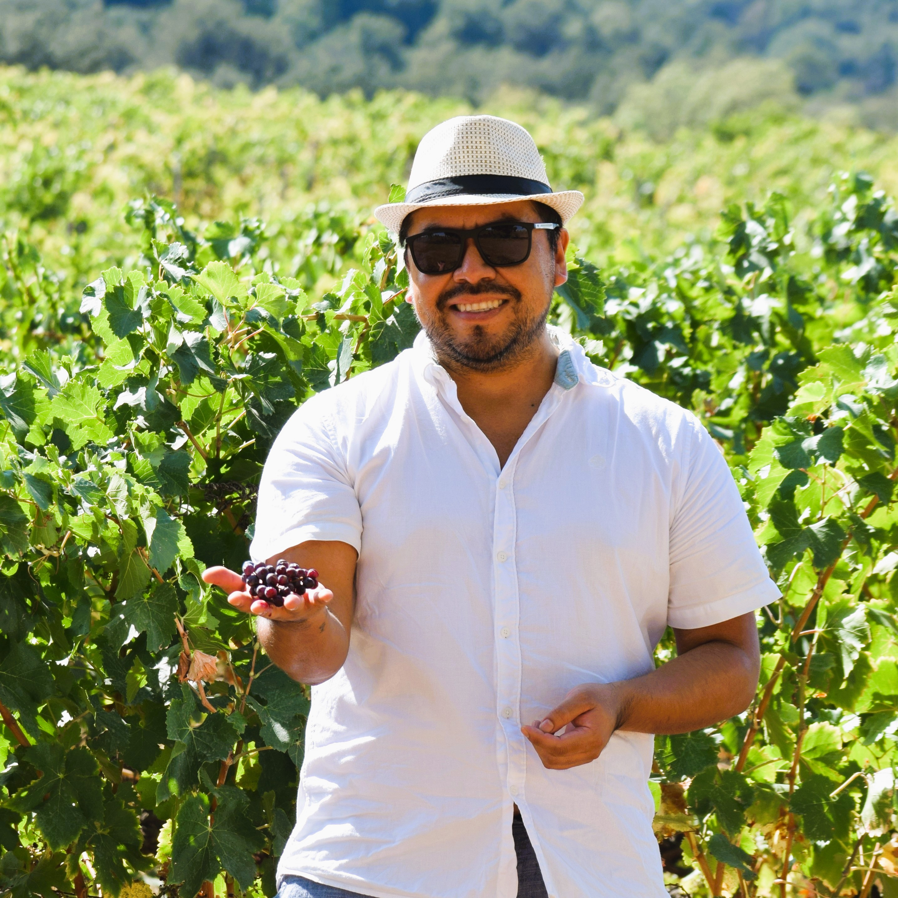

A diagnostic toolkit to measure how wine tourism creates value for small family wineries – even when data is scarce.
Four pillars – a health check‑up for wine tourism regions
📌 To explore the complete framework, select your preferred guide below:
Both versions explain the four pillars in detail – one with simple analogies, the other with technical depth.
📢 Apply TIVAF to your region – I collaborate with wine consortia, DMOs, and researchers. Get in touch →
🌍 Beyond wine – TIVAF is designed to be replicable for olive oil, cheese, crafts, and any geographical indication (GI) product where small producers and data scarcity are common. The framework adapts to any heritage‑based rural value chain.
I design diagnostic tools for wine regions, geographical indications, and rural territories – bridging economic analysis, institutional diagnostics, and heritage interpretation. My current research compares wine area development in Emilia-Romagna (Italy) and Priorat (Catalonia, Spain).
Languages: 🇬🇧 English 🇪🇸 Spanish 🇵🇹 Portuguese 🇮🇹 Italian 🇫🇷 French
